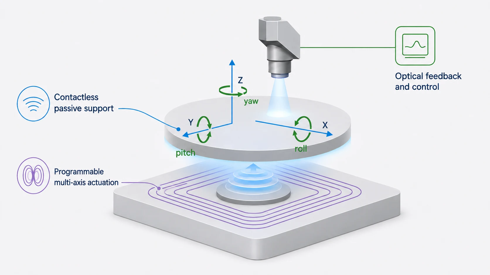
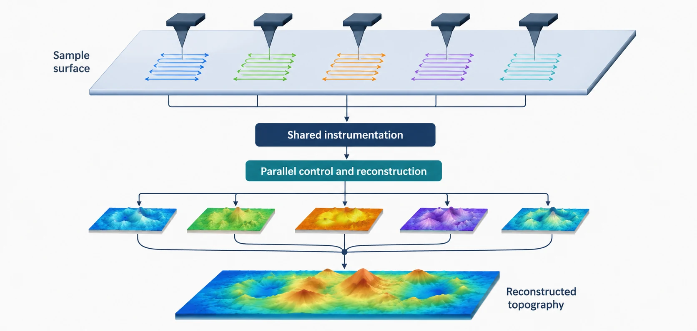
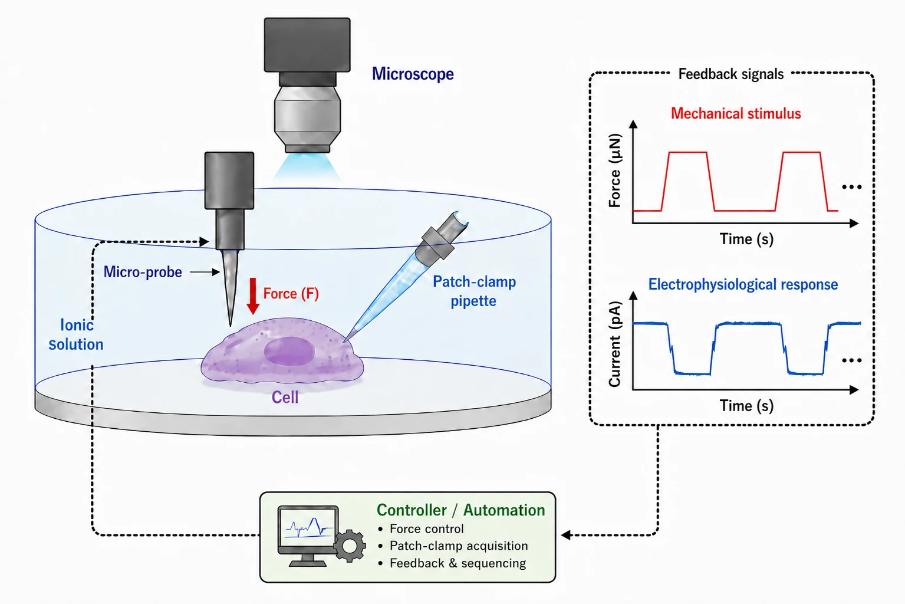
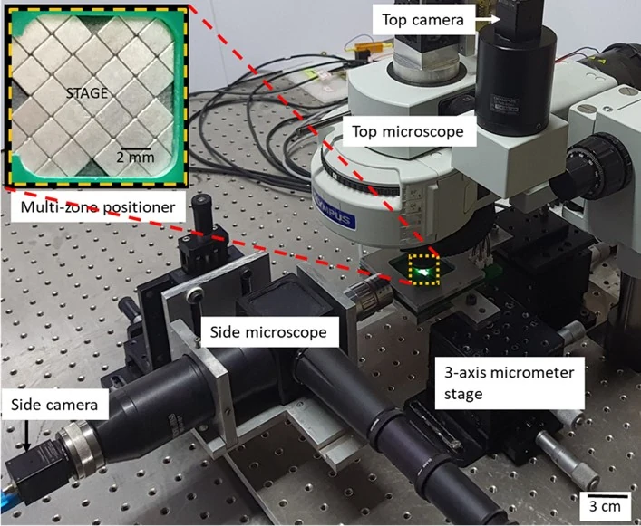
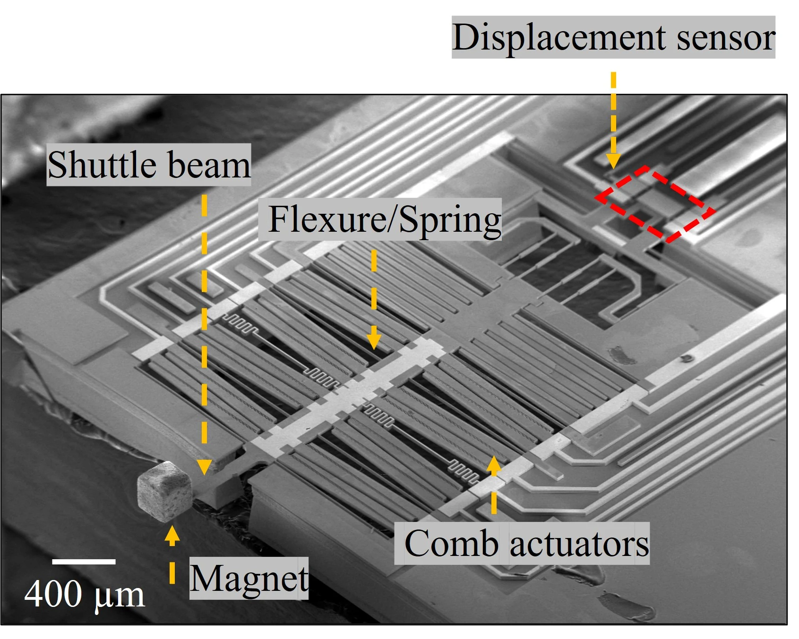
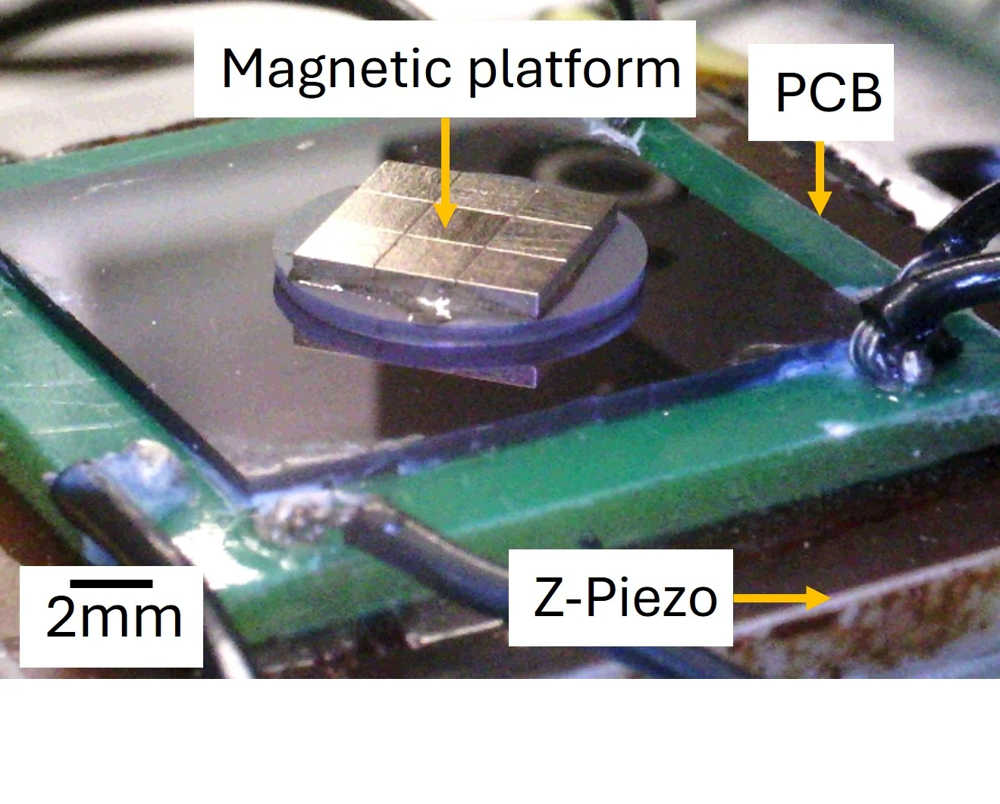
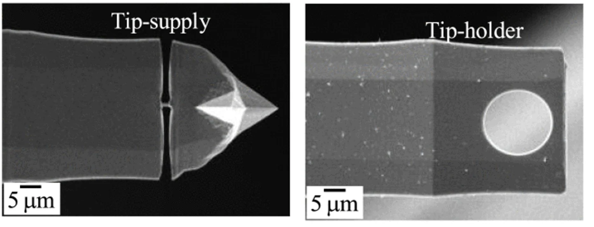
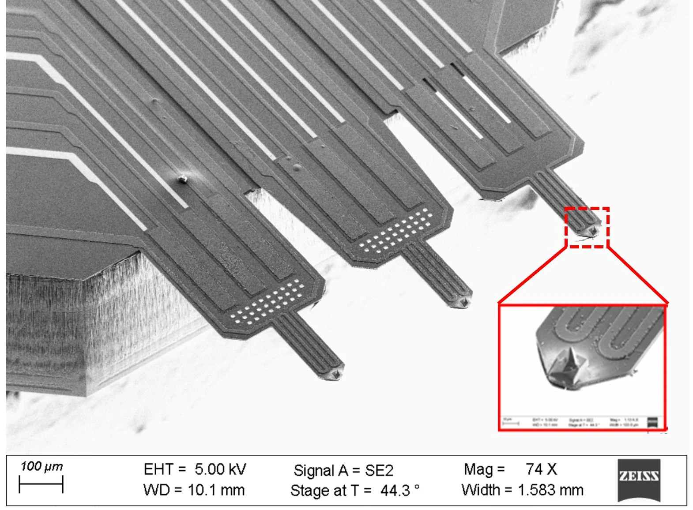

Semiconductor metrology
Contactless multi-axis stages and parallel nanoscale imaging systems for inspection, alignment, advanced packaging, and precision assembly.
PIC Lab develops contactless positioning systems, high-throughput scanning probe microscopes, micro-robotic instruments, and intelligent control architectures for semiconductor metrology, mechanobiology, and engineering education.

Modern precision systems often require compromises among range, resolution, bandwidth, footprint, payload, and degrees of freedom. PIC Lab addresses these limits by designing the physical architecture, actuator, sensor, electronics, estimation methods, and controller together.
Our long-term objective is to create compact and reconfigurable instruments that reduce friction, wear, backlash, moving mass, and unnecessary hardware complexity while improving throughput and repeatability.
Contactless multi-axis stages and parallel nanoscale imaging systems for inspection, alignment, advanced packaging, and precision assembly.
Automated force stimulation and electrophysiological measurement systems for studying cellular mechanics and chronic-pain mechanisms.
Modular teaching platforms that expose actuation, sensing, electronics, communication, and control layers for hands-on learning.
All three flagship programs are at the concept stage and are recruiting PhD and postdoctoral researchers.
Passive support, programmable actuation, and optical feedback for semiconductor metrology, OSAT, precision assembly, and optical alignment.

Scalable multi-probe instrumentation with shared hardware, parallel feedback, and coordinated topography reconstruction.

Automated mechanical stimulation, force feedback, patch-clamp acquisition, and synchronized experiment control at the single-cell scale.
Completed doctoral work at IISc Bangalore and postdoctoral work at UT Dallas established the technical lineage for PIC Lab.





PIC Lab is actively recruiting PhD students and welcomes expressions of interest from postdoctoral researchers in precision instrumentation, control, AFM, MEMS, machine vision, embedded systems, and micro-robotics.
Prof. S. O. Reza Moheimani presented the team’s work on modeling and control of vertical dynamics in Genova, Italy.
The three-probe MEMS AFM architecture was accepted in IEEE/ASME Transactions on Mechatronics.
The platform combines acoustic support, electromagnetic actuation, and eddy-current damping.
Assistant Professor · Department of Electrical Engineering · IIT Kharagpur
Dr. Singh develops precision instruments that combine advanced actuation, integrated sensing, machine vision, electronics, and feedback control. Before joining IIT Kharagpur, he conducted postdoctoral research at UT Dallas and completed his PhD and MS by Research at IISc Bangalore.